New Zealand T20I Team
Consistent performers with balanced squads.
About New Zealand T20I Team
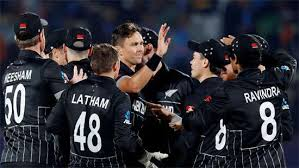
Country: New Zealand
Home Ground: Various (e.g., Eden Park, Auckland)
Captain: Kane Williamson
Coach: Gary Stead
New Zealand’s T20I team, the Black Caps, is known for its team spirit and all-round capabilities, reaching the 2021 T20 World Cup final.
New-zealand Players
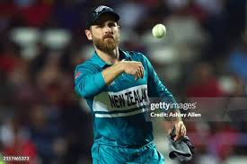
Kane Williamson (C)
Captain, batsman.
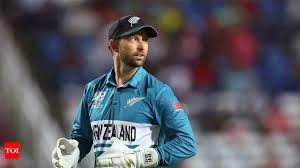
Devon Conway
Batsman, reliable opener.
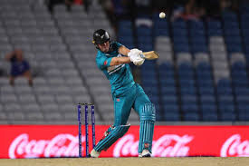
Finn Allen
Opener, aggressive batsman.
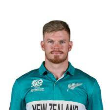
Glenn Phillips
Batsman, power-hitter.
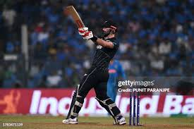
Daryl Mitchell
All-rounder, middle-order anchor.
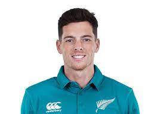
Mitchell Santner
All-rounder, spinner.
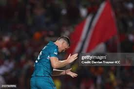
James Neesham
All-rounder, versatile.
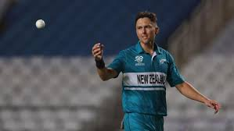
Trent Boult
Bowler, swing specialist.
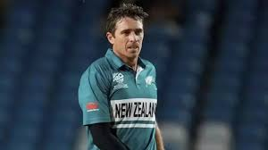
Tim Southee
Bowler, experienced pacer.
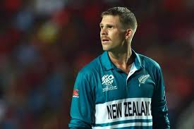
Lockie Ferguson
Bowler, express pace.
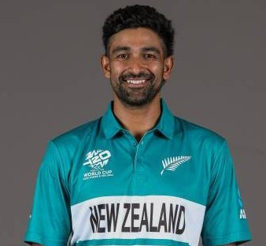
Ish Sodhi
Spinner, wicket-taker.